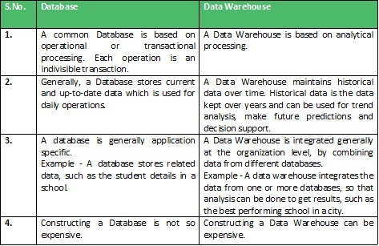

A Database Management System (DBMS) stores data in the form of tables, uses ER model and the goal is ACID properties. For example a DBMS of college has tables for students, faculty, etc.
A Data Warehouse is separate from DBMS, it stores huge amount of data, which is typically collected from multiple heterogeneous source like files, DBMS, etc. The goal is to produce statistical results that may help in decision makings. For example, a college might want to see quick different results, like how is the placement of CS students has improved over last 10 years, in terms of salaries, counts, etc.
An ordinary Database can store MBs to GBs of data and that too for a specific purpose. For storing data of TB size, the storage shifted to Data Warehouse. Besides this, a transactional database doesn’t offer itself to analytics. To effectively perform analytics, an organization keeps a central Data Warehouse to closely study its business by organizing, understanding and using its historic data for taking strategic decisions and analyzing trends.

Data Warehousing can be applicable anywhere where we have huge amount of data and we want to see statistical results that help in decision making.
- Social Media Websites: The social networking websites like Facebook, Twitter, Linkedin etc. are based on analyzing large data sets. These sites gather data related to members, groups, locations etc. and store it in a single central repository. Being large amount of data, Data Warehouse is needed for implementing the same.
- Banking : Most of the banks these days use warehouses to see spending patterns of account/card holders. They use this to provide them special offers, deals, etc.
- Government : Government uses data warehouse to store and analyze tax payment whch is used to detect tax thefts.
There can be many more applications in different sectors like E-Commerce, Telecommunication, Transportation Services, Marketing and Distribution, Healthcare and Retail.
Reference :
http://www3.cs.stonybrook.edu/~cse634/presentations/DataWarehousing-part-1.pdf